Código
# Carregamento dos pacotes
library(ggplot2)
library(dplyr)
library(plotly)
library(highcharter)
library(leaflet)
library(scales)

Estatística e Probabilidade
Prof. Ben Dêivide (DEFIM/CAP/UFSJ)
A visualização de dados é uma etapa importante no processo de análise, pois permite representar as informações de forma mais clara e identificar características que nem sempre são facilmente percebidas apenas pela observação dos valores numéricos. Na Engenharia Civil, esse recurso pode auxiliar na análise de diferentes aspectos das obras, como custos, prazos, características técnicas e distribuição dos dados.
A linguagem R disponibiliza diferentes sistemas para a construção de gráficos, desde as funções disponíveis no próprio Base R até pacotes que oferecem maior possibilidade de personalização e interatividade. Entre eles, destacam-se o ggplot2, baseado na construção dos gráficos por meio de camadas, além dos pacotes plotly e highcharter, voltados para visualizações interativas, e o leaflet, utilizado para representações espaciais.
Neste relatório, esses recursos serão aplicados a uma base de dados composta por informações de obras de Engenharia Civil. A partir das variáveis disponíveis, serão construídas diferentes representações gráficas, buscando avaliar a adequação de cada sistema e geometria ao tipo de informação analisada e compreender como as escolhas realizadas durante a construção dos gráficos podem contribuir para sua interpretação.
O objetivo deste trabalho é aplicar diferentes recursos de visualização de dados disponíveis na linguagem R a uma base relacionada a obras de Engenharia Civil, buscando representar e analisar suas principais características de forma clara e adequada.
De forma específica, pretende-se: - Explorar os recursos gráficos do Base R e dos pacotes ggplot2, plotly, highcharter e leaflet; - Construir gráficos adequados a variáveis quantitativas e qualitativas; - Comparar diferentes formas de representação de uma mesma informação; utilizar recursos como cores, escalas, camadas, facetas e temas; - Desenvolver visualizações interativas e espaciais; e - Analisar a importância da escolha do sistema gráfico e da geometria para a comunicação e interpretação dos dados.
O desenvolvimento deste trabalho será realizado a partir de uma base de dados contendo informações referentes a 300 obras de Engenharia Civil e 11 variáveis relacionadas às suas características gerais, econômicas e técnicas. Inicialmente, a base será importada para o R e será realizada uma inspeção dos dados, com a verificação de suas dimensões, estrutura, classificação das variáveis, resumo geral e existência de valores ausentes.
Em seguida, serão construídas diferentes representações gráficas utilizando inicialmente as funções disponíveis no Base R e, posteriormente, os recursos do pacote ggplot2. Serão utilizados gráficos de dispersão, histogramas, boxplots e gráficos de barras, de acordo com a natureza das variáveis e com o objetivo de cada análise. Também serão explorados recursos de personalização, como cores, escalas, temas, camadas e facetas.
Na sequência, serão utilizados os pacotes plotly e highcharter para a construção de gráficos interativos, permitindo a consulta de informações adicionais e a exploração individual das observações. Por fim, o pacote leaflet será utilizado para a representação espacial da distribuição das obras entre as regiões brasileiras. Como a base não apresenta coordenadas individuais das obras, serão adotados pontos de referência para cada região, sem atribuir aos marcadores a localização exata dos registros.
Ao longo das análises, as diferentes representações serão comparadas quanto à forma de construção, aos recursos disponíveis e à adequação ao tipo de informação apresentada. Ao final, será desenvolvido um script reunindo os principais sistemas gráficos utilizados e as decisões adotadas para a comunicação visual dos dados.
Entre os principais comandos e funções utilizados ao longo do desenvolvimento, destacam-se:
read.csv(): importa a base de dados para o ambiente do R;head() e tail(): apresentam, respectivamente, as primeiras e as últimas observações da base;dim(), nrow() e ncol(): permitem verificar as dimensões da base e as quantidades de observações e variáveis;str() e glimpse(): apresentam a estrutura da base e os tipos de dados associados às variáveis;summary(): fornece um resumo geral das variáveis;table() e count(): realizam a contagem das observações de acordo com as categorias analisadas;group_by() e summarise(): permitem agrupar os dados e calcular medidas resumidas para cada grupo;arrange(): organiza as observações de acordo com os valores de uma variável;hist(), boxplot(), barplot() e plot(): constroem diferentes representações gráficas utilizando o Base R;abline(): acrescenta linhas de referência ou tendência a gráficos do Base R;ggplot(): inicia a construção de gráficos utilizando o sistema gráfico do ggplot2;geom_point(), geom_bar(), geom_histogram() e geom_boxplot(): definem diferentes geometrias para a representação dos dados no ggplot2;geom_density() e geom_smooth(): acrescentam, respectivamente, curvas de densidade e linhas de tendência aos gráficos;facet_wrap(): divide um gráfico em diferentes painéis de acordo com uma variável categórica;labs() e theme_minimal(): permitem ajustar títulos, eixos e legendas e definir a apresentação visual dos gráficos;ggplotly(): transforma um gráfico desenvolvido com ggplot2 em uma representação interativa;plot_ly(): permite construir diretamente gráficos interativos utilizando o pacote plotly;hchart(): realiza a construção de gráficos interativos com o pacote highcharter;hc_title(), hc_xAxis(), hc_yAxis() e hc_tooltip(): permitem personalizar títulos, eixos e informações interativas dos gráficos construídos com highcharter;leaflet() e addTiles(): iniciam a construção do mapa interativo e adicionam a camada cartográfica de base;addMarkers() e addCircles(): acrescentam marcadores e círculos de destaque ao mapa;setView(): define a posição e o nível de aproximação inicial do mapa;left_join(): associa informações de diferentes objetos a partir de uma variável em comum.# Carregamento dos pacotes
library(ggplot2)
library(dplyr)
library(plotly)
library(highcharter)
library(leaflet)
library(scales)A base de dados foi importada para o R através da função read.csv() e atribuída a dados:
# Importação da base de dados
dados <- read.csv(
"dados_engenharia_civil.csv",
stringsAsFactors = FALSE,
check.names = FALSE
)Após a importação, foram utilizadas as funções head() e tail() para visualizar, respectivamente, as primeiras e as últimas observações da base de dados.
# Visualização das primeiras observações
head(dados) id_obra tipo_obra regiao area_construida custo_total prazo_meses
1 1 Industrial Nordeste 802.5 1608826 36
2 2 Comercial Nordeste 791.5 2870992 20
3 3 Residencial Sul 575.4 1683606 13
4 4 Residencial Sudeste 1156.6 3469884 23
5 5 Comercial Centro-Oeste 581.5 2176259 28
6 6 Residencial Sudeste 606.9 1350551 27
resistencia_mpa consumo_cimento indice_falhas satisfacao sustentavel
1 26.80 393.1 1 6.2 Sim
2 28.05 394.1 2 7.8 Sim
3 33.12 387.0 4 3.8 Não
4 31.06 368.7 1 3.8 Sim
5 28.29 389.4 2 6.7 Sim
6 32.94 329.8 4 1.0 Sim# Visualização das últimas observações
tail(dados) id_obra tipo_obra regiao area_construida custo_total prazo_meses
295 295 Industrial Nordeste 586.3 1420749 11
296 296 Comercial Sudeste 800.2 2983588 18
297 297 Comercial Nordeste 360.5 1229413 32
298 298 Comercial Norte 785.3 2676964 7
299 299 Residencial Nordeste 430.3 1533911 20
300 300 Comercial Norte 405.2 1415176 35
resistencia_mpa consumo_cimento indice_falhas satisfacao sustentavel
295 33.60 390.4 4 2.5 Não
296 29.15 351.1 3 4.3 Sim
297 28.97 364.4 2 7.8 Sim
298 30.53 295.0 2 3.8 Sim
299 31.88 308.2 3 5.0 Não
300 28.53 378.9 2 8.7 NãoA função head() apresenta, por padrão, as seis primeiras observações do objeto, enquanto tail() apresenta as seis últimas. Dessa forma, é possível realizar uma verificação inicial da leitura dos dados e observar como as variáveis foram organizadas após a importação.
Por fim, foi utilizada a função dim() para verificar as dimensões da base:
# Verificação das dimensões da base
dim(dados)[1] 300 11Para verificar separadamente a quantidade de observações e de variáveis presentes na base de dados, foram utilizadas as funções nrow() e ncol(), conforme apresentado a seguir:
# Número de observações
nrow(dados)[1] 300# Número de variáveis
ncol(dados)[1] 11A função nrow() retorna o número de linhas da base, que corresponde à quantidade de observações, enquanto ncol() retorna o número de colunas, correspondente à quantidade de variáveis.
A partir dos resultados obtidos, verifica-se que a base de dados é composta por 300 observações e 11 variáveis, sendo cada observação correspondente a uma obra de Engenharia Civil.
Após a verificação das dimensões da base, foi analisada a sua estrutura com o objetivo de identificar os tipos de dados associados a cada variável. Para isso, foram utilizadas as funções str() e glimpse(), conforme apresentado a seguir:
# Verificação da estrutura da base de dados
str(dados)'data.frame': 300 obs. of 11 variables:
$ id_obra : int 1 2 3 4 5 6 7 8 9 10 ...
$ tipo_obra : chr "Industrial" "Comercial" "Residencial" "Residencial" ...
$ regiao : chr "Nordeste" "Nordeste" "Sul" "Sudeste" ...
$ area_construida: num 802 792 575 1157 582 ...
$ custo_total : num 1608826 2870992 1683606 3469884 2176259 ...
$ prazo_meses : int 36 20 13 23 28 27 20 15 35 15 ...
$ resistencia_mpa: num 26.8 28.1 33.1 31.1 28.3 ...
$ consumo_cimento: num 393 394 387 369 389 ...
$ indice_falhas : int 1 2 4 1 2 4 1 2 0 1 ...
$ satisfacao : num 6.2 7.8 3.8 3.8 6.7 1 9.7 8.8 7.6 5.1 ...
$ sustentavel : chr "Sim" "Sim" "Não" "Sim" ...# Visualização da estrutura da base de dados
glimpse(dados)Rows: 300
Columns: 11
$ id_obra <int> 1, 2, 3, 4, 5, 6, 7, 8, 9, 10, 11, 12, 13, 14, 15, 16,…
$ tipo_obra <chr> "Industrial", "Comercial", "Residencial", "Residencial…
$ regiao <chr> "Nordeste", "Nordeste", "Sul", "Sudeste", "Centro-Oest…
$ area_construida <dbl> 802.5, 791.5, 575.4, 1156.6, 581.5, 606.9, 572.7, 1380…
$ custo_total <dbl> 1608825.8, 2870991.8, 1683605.5, 3469884.2, 2176258.5,…
$ prazo_meses <int> 36, 20, 13, 23, 28, 27, 20, 15, 35, 15, 36, 23, 32, 12…
$ resistencia_mpa <dbl> 26.80, 28.05, 33.12, 31.06, 28.29, 32.94, 35.05, 42.62…
$ consumo_cimento <dbl> 393.1, 394.1, 387.0, 368.7, 389.4, 329.8, 422.6, 347.3…
$ indice_falhas <int> 1, 2, 4, 1, 2, 4, 1, 2, 0, 1, 0, 1, 2, 1, 1, 3, 1, 1, …
$ satisfacao <dbl> 6.2, 7.8, 3.8, 3.8, 6.7, 1.0, 9.7, 8.8, 7.6, 5.1, 2.6,…
$ sustentavel <chr> "Sim", "Sim", "Não", "Sim", "Sim", "Sim", "Não", "Não"…As duas funções apresentam informações semelhantes e permitem verificar que as variáveis foram importadas como dados dos tipos int, chr, num/dbl. Na saída da função glimpse(), as variáveis numéricas com valores inteiros são representadas por
A partir dessa estrutura, as variáveis area_construida, custo_total, prazo_meses, resistencia_mpa, consumo_cimento, indice_falhas e satisfacao podem ser classificadas como quantitativas, uma vez que representam valores numéricos associados às características das obras analisadas.
Já as variáveis tipo_obra, regiao e sustentavel são qualitativas, pois representam categorias utilizadas para caracterizar as obras. Embora tenham sido reconhecidas pelo R como caracteres (chr), essas variáveis podem ser tratadas como categóricas durante as análises.
A variável id_obra, por sua vez, foi reconhecida pelo R como um número inteiro (int). Entretanto, apesar de sua representação numérica, ela não corresponde a uma variável quantitativa, uma vez que os valores são utilizados apenas para identificar individualmente cada obra.
Após a análise da estrutura e da classificação das variáveis, foi utilizada a função summary() para obter uma visão geral dos dados presentes na base.
# Resumo das variáveis da base de dados
summary(dados) id_obra tipo_obra regiao area_construida
Min. : 1.00 Length :300 Length :300 Min. : 45.9
1st Qu.: 75.75 N.unique : 4 N.unique : 5 1st Qu.: 629.4
Median :150.50 N.blank : 0 N.blank : 0 Median : 909.1
Mean :150.50 Min.nchar: 9 Min.nchar: 3 Mean : 873.0
3rd Qu.:225.25 Max.nchar: 14 Max.nchar: 12 3rd Qu.:1087.5
Max. :300.00 Max. :1855.9
custo_total prazo_meses resistencia_mpa consumo_cimento
Min. : 112443 Min. : 6.00 Min. :17.82 Min. :188.4
1st Qu.:1754793 1st Qu.:14.00 1st Qu.:28.97 1st Qu.:312.0
Median :2548002 Median :20.00 Median :31.94 Median :344.4
Mean :2689385 Mean :20.98 Mean :32.18 Mean :341.3
3rd Qu.:3475290 3rd Qu.:29.00 3rd Qu.:35.51 3rd Qu.:373.4
Max. :6526477 Max. :36.00 Max. :44.43 Max. :467.6
indice_falhas satisfacao sustentavel
Min. :0.000 Min. : 1.00 Length :300
1st Qu.:1.000 1st Qu.: 3.50 N.unique : 2
Median :2.000 Median : 5.70 N.blank : 0
Mean :2.203 Mean : 5.74 Min.nchar: 3
3rd Qu.:3.000 3rd Qu.: 8.10 Max.nchar: 3
Max. :7.000 Max. :10.00 A partir do resumo apresentado, verifica-se uma variação considerável entre as características das obras analisadas, principalmente em relação à área construída, ao custo total e ao prazo de execução. Essa variação é coerente com uma base composta por diferentes tipos e portes de obras.
De modo geral, os valores mínimos e máximos observados não apresentam incompatibilidades evidentes com o contexto das variáveis analisadas. Alguns valores encontram-se mais afastados das respectivas médias, porém essa diferença, isoladamente, não indica necessariamente uma inconsistência nos dados.
Após a análise inicial das variáveis, foi verificada a existência de valores ausentes na base de dados. Inicialmente, utilizou-se a função is.na() em conjunto com sum() para identificar a quantidade total de valores ausentes.
# Quantidade total de valores ausentes
sum(is.na(dados))[1] 0Em seguida, foi realizada a verificação por variável por meio da função colSums():
# Quantidade de valores ausentes por variável
colSums(is.na(dados)) id_obra tipo_obra regiao area_construida custo_total
0 0 0 0 0
prazo_meses resistencia_mpa consumo_cimento indice_falhas satisfacao
0 0 0 0 0
sustentavel
0 A partir dos resultados obtidos, verificou-se que não existem valores ausentes na base de dados. A função colSums() confirmou que todas as variáveis apresentam zero valores ausentes.
Inicialmente, foi analisada a relação entre a área construída e o custo total das obras por meio de um gráfico de dispersão. Esse tipo de gráfico permite visualizar o comportamento conjunto de duas variáveis quantitativas e identificar possíveis relações entre elas.
Para a construção do gráfico, foi utilizada a função plot(), considerando a área construída no eixo X e o custo total no eixo Y.
# Gráfico de dispersão entre área construída e custo total
plot(
dados$area_construida,
dados$custo_total,
main = "Relação entre área construída e custo total",
xlab = "Área construída (m²)",
ylab = "Custo total (R$ milhões)",
pch = 19,
col = "steelblue",
cex = 0.8,
yaxt = "n"
)
# Valores utilizados no eixo Y
valores_y <- seq(
0,
max(dados$custo_total),
by = 1000000
)
# Inclusão do eixo Y em milhões de reais
axis(
side = 2,
at = valores_y,
labels = valores_y / 1000000,
las = 1
)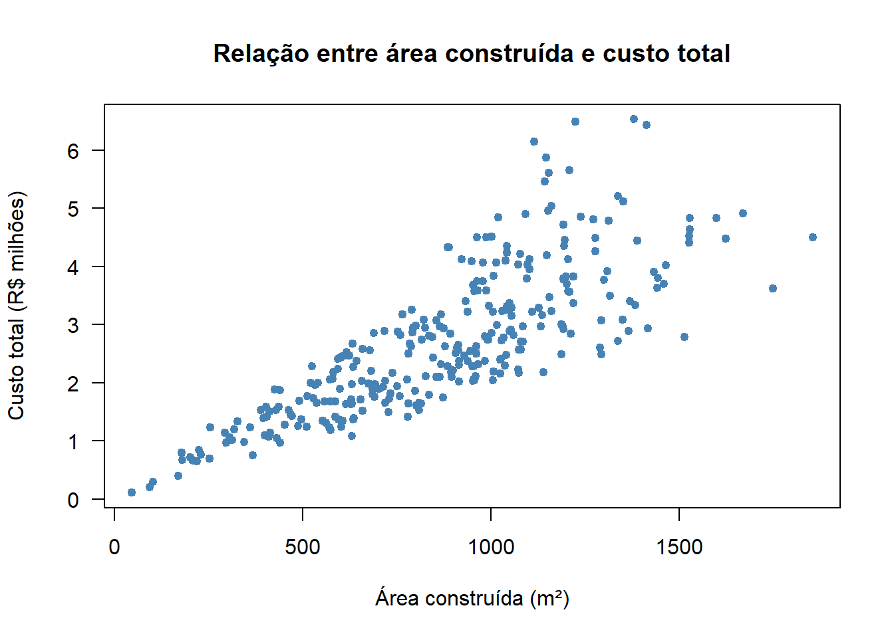
A partir do gráfico, observa-se uma relação positiva entre a área construída e o custo total das obras, indicando que, de modo geral, obras com maiores áreas apresentam maiores custos. Nota-se ainda que a variação dos custos aumenta entre as obras de maior porte.
Além disso, são observados alguns pontos mais afastados da concentração principal dos dados, principalmente entre as obras com áreas superiores a 1.000 m², indicando uma maior variação de custos em relação à variação de área construída.
Para avaliar a distribuição dos valores de resistência à compressão do concreto, foi construído um histograma utilizando a função hist().
# Histograma da resistência à compressão do concreto
hist(
dados$resistencia_mpa,
breaks = 10,
main = "Distribuição da resistência à compressão",
xlab = "Resistência à compressão (MPa)",
ylab = "Frequência",
col = "steelblue",
border = "white"
)
# Média da resistência à compressão
media_resistencia <- mean(dados$resistencia_mpa)
# Linha vertical indicando a média
abline(
v = media_resistencia,
col = "red",
lwd = 2,
lty = 2
)
legend(
"topright",
legend = "Média",
col = "red",
lty = 2,
lwd = 2,
bty = "n"
)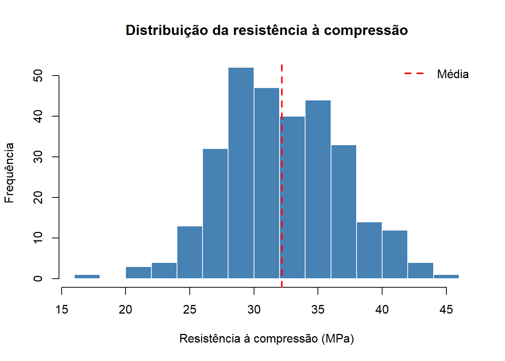
Foi utilizado breaks = 10 para dividir os valores de resistência em classes e facilitar a visualização da distribuição. A linha vertical tracejada representa a média da resistência à compressão das obras analisadas.
O histograma apresenta maior concentração dos valores de resistência à compressão na região central da distribuição e comportamento relativamente simétrico em torno dos valores centrais. Apesar disso, é possível observar resultados pontuais mais afastados em ambas as extremidades. Destaca-se a presença de um valor próximo de 18 MPa, consideravelmente inferior à maior parte das observações e um único valor próximo de 45 MPa.
Para comparar a distribuição dos custos entre os diferentes tipos de obra, foi construído um boxplot utilizando a função boxplot().
# Boxplot do custo total por tipo de obra
boxplot(
dados$custo_total / 1000000 ~ dados$tipo_obra,
main = "Distribuição do custo total por tipo de obra",
xlab = "Tipo de obra",
ylab = "Custo total (R$ milhões)",
col = c("steelblue", "lightblue", "lightgreen", "lightpink"),
border = "gray40"
)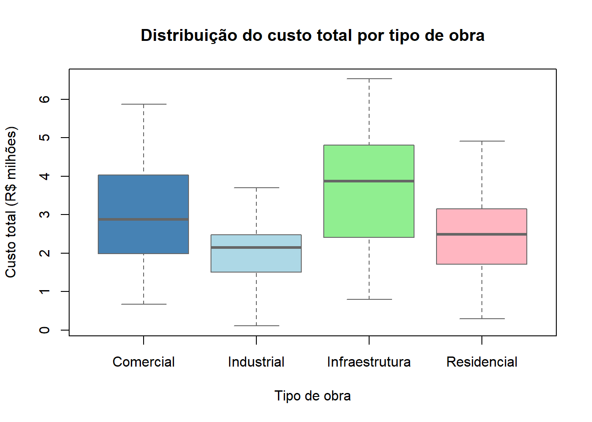
Neste caso, os valores de custo_total foram divididos por 1.000.000 para que o eixo vertical fosse apresentado em milhões de reais, facilitando a leitura dos valores. Foram utilizadas cores diferentes para distinguir visualmente cada tipo de obra.
Portanto, a partir do boxplot, verifica-se que as obras de infraestrutura apresentam a maior mediana de custo total e também a maior dispersão dos valores. Em contrapartida, as obras industriais apresentam os menores custos e uma menor variabilidade em comparação aos demais grupos.
Não foram identificados valores atípicos pelo critério utilizado na construção do boxplot, uma vez que não são observados pontos além dos limites representados pelos bigodes.
Para avaliar a distribuição das obras entre as regiões brasileiras, inicialmente foi realizada a contagem das observações de cada região utilizando a função table().
# Contagem do número de obras por região
obras_regiao <- table(dados$regiao)
obras_regiao
Centro-Oeste Nordeste Norte Sudeste Sul
34 78 18 101 69 Em seguida, os resultados obtidos foram representados por meio de um gráfico de barras utilizando a função barplot(). Optou-se por ordenar os dados por região e apresentá-los por escala de cor, através da paleta heat.colors().
# Ordenação das regiões pelo número de obras
obras_regiao_ordenadas <- sort(obras_regiao, decreasing = TRUE)
# Gráfico de barras do número de obras por região
barplot(
obras_regiao_ordenadas,
main = "Distribuição das obras por região",
xlab = "Região",
ylab = "Número de obras",
col = heat.colors(length(obras_regiao_ordenadas)),
border = "white"
)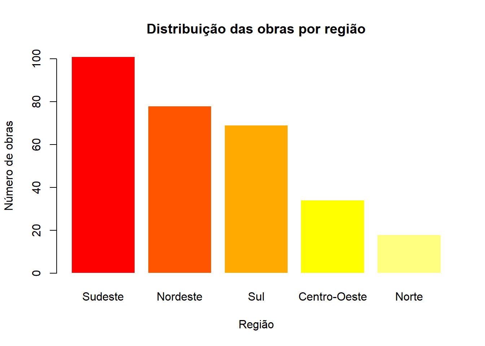
A partir dos resultados, verifica-se que a região Sudeste concentra o maior número de obras da base, com 101 registros, seguida pelas regiões Nordeste, com 78, e Sul, com 69. As menores quantidades são observadas no Centro-Oeste, com 34 obras, e no Norte, com 18.
A maior concentração de obras no Sudeste pode ser relacionada à maior participação dessa região na atividade econômica e no setor da construção civil do país. Entretanto, como os dados correspondem às obras de uma empresa específica, essa distribuição não representa necessariamente o comportamento de todo o setor da construção civil no Brasil.
A relação entre área construída e custo total foi analisada novamente utilizando o pacote ggplot2, acrescentando a diferenciação das observações de acordo com o tipo de obra.
# Gráfico de dispersão por tipo de obra
dados |>
ggplot(
aes(
x = area_construida,
y = custo_total / 1000000,
color = tipo_obra
)
) +
geom_point(size = 2, alpha = 0.8) +
labs(
title = "Relação entre área construída e custo total",
subtitle = "Distribuição por tipo de obra",
x = "Área construída (m²)",
y = "Custo total (R$ milhões)",
color = "Tipo de obra"
) +
theme_minimal()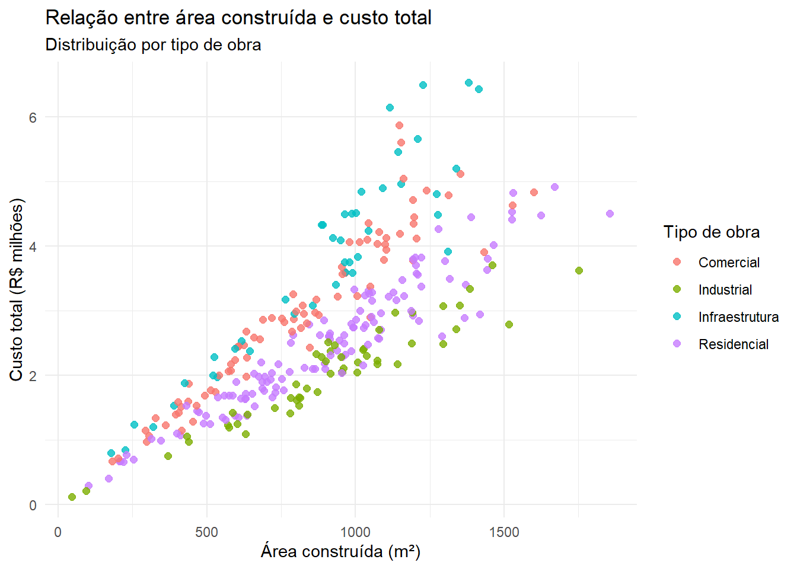
Nesse gráfico, a função ggplot() define os dados e a estética do gráfico, enquanto geom_point() determina a representação das observações por meio de pontos. A variável tipo_obra foi associada ao argumento color, fazendo com que cada categoria seja representada por uma cor diferente. Também foi aplicado o tema theme_minimal() para proporcionar uma apresentação mais limpa do gráfico.
A separação das observações por tipo de obra mantém o padrão identificado anteriormente, com aumento do custo total à medida que a área construída aumenta. Entretanto, a utilização das cores permite observar diferenças entre as categorias mesmo para obras com áreas semelhantes.
As obras de infraestrutura aparecem com maior frequência entre os custos mais elevados, enquanto as obras industriais tendem a apresentar custos menores. As categorias comercial e residencial apresentam comportamento intermediário. Dessa forma, além de confirmar a tendência de aumento do custo com a área construída, a diferenciação por tipo de obra mostra que obras com áreas semelhantes podem apresentar custos distintos de acordo com o tipo.
A distribuição do custo total entre os diferentes tipos de obra foi analisada novamente, desta vez utilizando os recursos gráficos do pacote ggplot2.
# Boxplot do custo total por tipo de obra
dados |>
ggplot(
aes(
x = tipo_obra,
y = custo_total / 1000000,
fill = tipo_obra
)
) +
geom_boxplot() +
labs(
title = "Distribuição do custo total por tipo de obra",
x = "Tipo de obra",
y = "Custo total (R$ milhões)"
) +
theme_minimal() +
theme(legend.position = "none")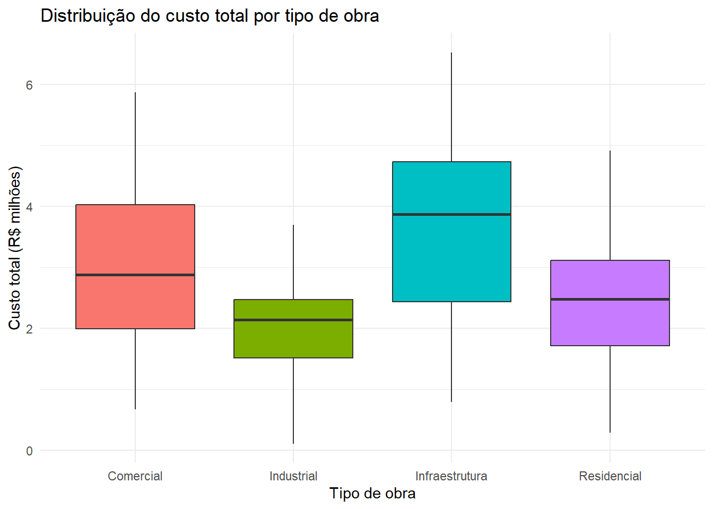
O resultado mantém o comportamento observado no boxplot construído com o Base R, com as obras de infraestrutura apresentando maior mediana e dispersão dos custos e as obras industriais apresentando valores menores.
Em comparação ao Base R, o ggplot2 permite organizar e personalizar os elementos do gráfico de forma mais estruturada, por meio da combinação de camadas e mapeamentos estéticos. Neste caso, o preenchimento das caixas foi associado diretamente à variável tipo_obra, e a aplicação do theme_minimal() proporcionou uma apresentação mais limpa.
A distribuição da resistência à compressão do concreto foi analisada novamente utilizando o ggplot2, acrescentando uma curva de densidade sobreposta ao histograma.
# Histograma com curva de densidade
dados |>
ggplot(aes(x = resistencia_mpa)) +
geom_histogram(
aes(y = after_stat(density)),
bins = 10,
fill = "steelblue",
color = "white"
) +
geom_density(
linewidth = 1
) +
labs(
title = "Distribuição da resistência à compressão",
subtitle = "Histograma com curva de densidade",
x = "Resistência à compressão (MPa)",
y = "Densidade"
) +
theme_minimal()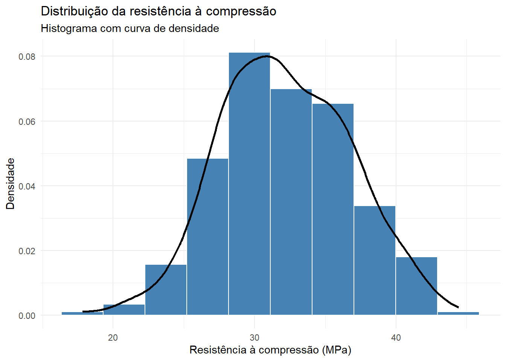
Para permitir a sobreposição das duas representações, o histograma foi construído utilizando aes(y = after_stat(density)), fazendo com que o eixo Y represente a densidade em vez da frequência absoluta. Em seguida, geom_density() adiciona a curva de densidade sobre os mesmos dados.
A curva de densidade reforça a interpretação realizada anteriormente, indicando maior concentração dos valores na região central e redução gradual da frequência em direção às extremidades. A distribuição apresenta comportamento aproximadamente simétrico, embora sejam observadas pequenas variações em torno dos valores centrais.
Para avaliar a adoção de práticas sustentáveis entre os diferentes tipos de obra, foi construído um gráfico de barras agrupadas utilizando o ggplot2. As obras foram separadas de acordo com sua classificação como sustentáveis ou não sustentáveis.
# Gráfico de barras por tipo de obra e sustentabilidade
dados |>
ggplot(
aes(
x = tipo_obra,
fill = sustentavel
)
) +
geom_bar(position = "dodge") +
labs(
title = "Adoção de práticas sustentáveis por tipo de obra",
x = "Tipo de obra",
y = "Número de obras",
fill = "Sustentável"
) +
theme_minimal()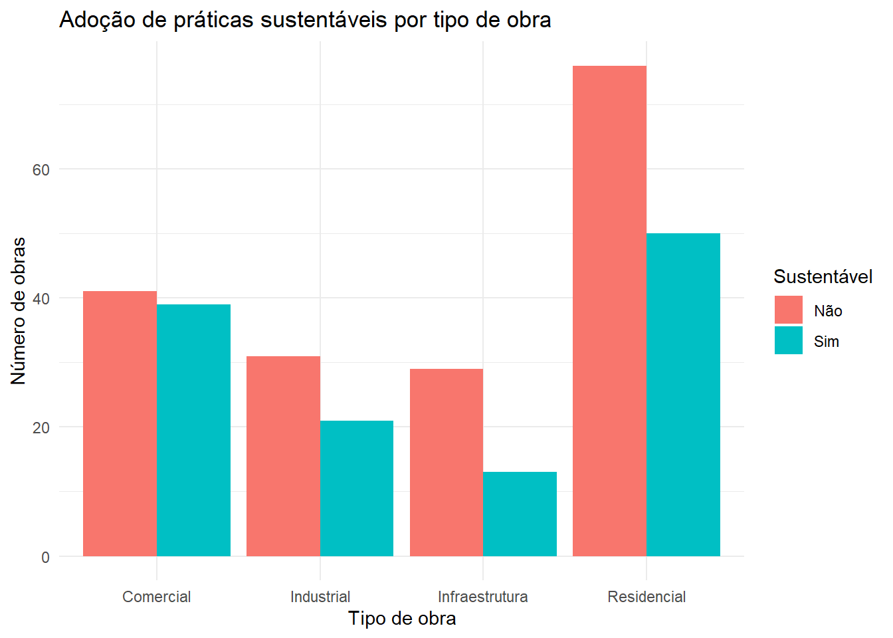
Nesse gráfico, tipo_obra foi associado ao eixo X e a variável sustentavel ao preenchimento (fill) das barras. A função geom_bar() realiza a contagem das observações de cada categoria, enquanto o argumento position = "dodge" posiciona as barras lado a lado, facilitando a comparação entre obras sustentáveis e não sustentáveis dentro de cada tipo.
Em termos absolutos, as obras residenciais apresentam o maior número de registros com práticas sustentáveis, seguidas pelas obras comerciais. A menor quantidade é observada nas obras de infraestrutura.
Além disso, é possível observar que, entre as obras comerciais, as quantidades de obras sustentáveis e não sustentáveis são bastante próximas. Nos demais tipos, as obras classificadas como não sustentáveis apresentam valor mais expressivo em relação às obras sustentáveis.
Para verificar se a relação entre área construída e custo total apresenta diferenças entre as regiões brasileiras, foi construído um gráfico de dispersão com facetas por região. Também foi adicionada uma reta de tendência para auxiliar na comparação do comportamento dos dados entre os grupos.
# Gráfico de dispersão com facetas por região
dados |>
ggplot(
aes(
x = area_construida,
y = custo_total / 1000000
)
) +
geom_point(
color = "steelblue",
alpha = 0.8
) +
geom_smooth(
method = "lm",
se = FALSE,
color = "red"
) +
facet_wrap(~regiao) +
labs(
title = "Relação entre área construída e custo total por região",
x = "Área construída (m²)",
y = "Custo total (R$ milhões)"
) +
theme_minimal()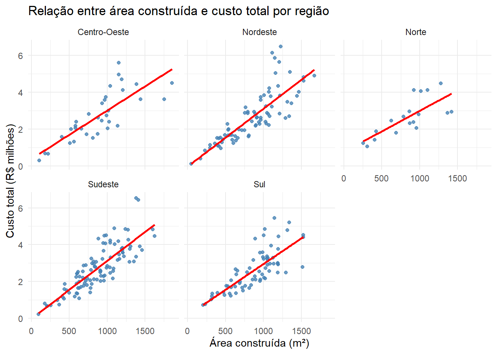
A função facet_wrap() divide as observações em diferentes painéis de acordo com a região, mantendo a mesma estrutura gráfica para facilitar a comparação. Já geom_smooth() com method = "lm" adiciona uma reta de tendência linear a cada painel, enquanto se = FALSE remove a representação do intervalo de confiança.
A partir das facetas, observa-se que a relação positiva entre área construída e custo total se mantém em todas as regiões, indicando que o aumento da área tende a estar acompanhado pelo aumento do custo das obras.
Apesar de algumas diferenças na dispersão dos dados e na inclinação das retas de tendência, nenhuma região apresenta comportamento claramente contrário ao padrão geral.
Para complementar as análises anteriores, foi avaliada a relação entre o consumo de cimento e a resistência à compressão do concreto. Essas variáveis foram escolhidas por representarem características relacionadas ao concreto utilizado nas obras. A área construída também foi incorporada ao gráfico por meio do tamanho dos pontos, permitindo visualizar o porte das obras junto às demais variáveis.
# Relação entre consumo de cimento e resistência à compressão
dados |>
ggplot(
aes(
x = consumo_cimento,
y = resistencia_mpa
)
) +
geom_point(
aes(size = area_construida),
alpha = 0.6,
color = "steelblue"
) +
geom_smooth(
method = "lm",
se = FALSE,
color = "black"
) +
facet_wrap(~tipo_obra) +
scale_size_continuous(
range = c(1, 5)
) +
labs(
title = "Consumo de cimento e resistência à compressão",
subtitle = "Comparação entre os diferentes tipos de obra",
x = "Consumo de cimento (kg/m³)",
y = "Resistência à compressão (MPa)",
size = "Área construída (m²)"
) +
theme_minimal()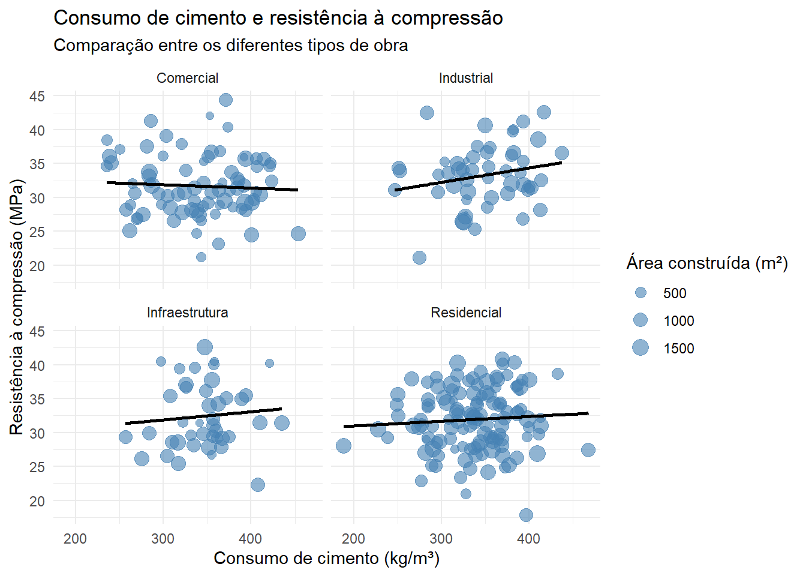
Foram utilizadas as camadas geom_point() e geom_smooth() para representar, respectivamente, as observações individuais e a tendência linear entre o consumo de cimento e a resistência à compressão. A função facet_wrap() separa os dados por tipo de obra, permitindo comparar o comportamento dessa relação entre as diferentes categorias. Além disso, o tamanho dos pontos foi associado à área construída e ajustado por meio de scale_size_continuous().
O gráfico indica que a relação entre o consumo de cimento e a resistência à compressão não é forte para os dados analisados, uma vez que as observações apresentam dispersão considerável e as retas de tendência possuem inclinações pouco acentuadas. A representação da área construída, pelo tamanho dos pontos, também não evidencia um padrão claro relacionado ao porte das obras.
Para complementar a análise da relação entre área construída e custo total, foi construído um gráfico interativo utilizando os pacotes ggplot2 e plotly.
# Construção do gráfico com ggplot2
grafico_custo <- dados |>
ggplot(
aes(
x = area_construida,
y = custo_total / 1000000,
color = tipo_obra,
text = paste(
"Obra:", id_obra,
"<br>Tipo:", tipo_obra,
"<br>Região:", regiao,
"<br>Área:", area_construida, "m²",
"<br>Custo: R$", round(custo_total / 1000000, 2), "milhões"
)
)
) +
geom_point(size = 2, alpha = 0.8) +
labs(
title = "Relação entre área construída e custo total",
x = "Área construída (m²)",
y = "Custo total (R$ milhões)",
color = "Tipo de obra"
) +
theme_minimal()
# Conversão para gráfico interativo
ggplotly(
grafico_custo,
tooltip = "text"
)A utilização do gráfico interativo facilitou a identificação individual das obras e permitiu analisar com maior detalhe pontos com custos relativamente altos ou baixos em relação à área construída. Entre eles, destaca-se a obra 201, de infraestrutura e localizada na região Nordeste, que apresenta área de 1.225,90 m² e custo de aproximadamente R$ 6,49 milhões, situando-se entre os maiores custos da base, mesmo quando comparada a obras de maior área.
Em sentido contrário, a obra 160, residencial e localizada no Centro-Oeste, apresenta área de 1.855,90 m² e custo de aproximadamente R$ 4,50 milhões. Apesar de possuir a maior área construída da base, seu custo é inferior ao de diversas obras menores. Dessa forma, a interatividade permitiu identificar e consultar diretamente observações que se afastam do comportamento predominante, complementando as análises realizadas anteriormente.
Para comparar a duração média das obras entre as regiões, os dados foram inicialmente agrupados por região e organizados em ordem crescente de prazo médio. Em seguida, foi construído um gráfico interativo diretamente com a função plot_ly().
# Cálculo do prazo médio por região
prazo_medio_regiao <- dados |>
group_by(regiao) |>
summarise(
prazo_medio = mean(prazo_meses)
) |>
arrange(prazo_medio) |>
mutate(
regiao = factor(regiao, levels = regiao)
)
# Construção do gráfico interativo
prazo_medio_regiao |>
plot_ly(
x = ~regiao,
y = ~prazo_medio,
type = "scatter",
mode = "lines+markers",
text = ~paste(
"Região:", regiao,
"<br>Prazo médio:", round(prazo_medio, 1), "meses"
),
hoverinfo = "text"
) |>
layout(
title = "Prazo médio das obras por região",
xaxis = list(title = "Região"),
yaxis = list(title = "Prazo médio (meses)")
)Para a construção do gráfico, foram calculados os prazos médios de cada região por meio das funções group_by() e summarise(). Os resultados foram organizados em ordem crescente para facilitar a comparação entre as regiões. A função plot_ly() foi utilizada para representar esses valores por meio de linhas e pontos, permitindo também consultar o prazo médio de cada região de forma interativa.
Os resultados mostram que as diferenças entre as regiões são pequenas, com prazos médios variando entre aproximadamente 19 e 22 meses. O Centro-Oeste apresenta o menor valor, seguido pelo Sul, enquanto o Norte apresenta o maior prazo médio. Sudeste e Nordeste apresentam resultados muito próximos.
Em comparação ao ggplotly(), o plot_ly() permite construir o gráfico interativo diretamente, sem a necessidade de criar anteriormente um objeto com ggplot2. Dessa forma, o plot_ly() faz mais sentido quando a interatividade já faz parte da proposta inicial do gráfico, enquanto o ggplotly() facilita a conversão de gráficos já construídos com ggplot2.
Para comparar o custo médio entre os diferentes tipos de obra, os dados foram agrupados por categoria e, em seguida, foi calculada a média do custo total. Os resultados foram representados por meio de um gráfico de colunas utilizando o pacote highcharter.
# Cálculo do custo médio por tipo de obra
custo_medio_tipo <- dados |>
group_by(tipo_obra) |>
summarise(
custo_medio = mean(custo_total)
) |>
arrange(desc(custo_medio))
# Gráfico de colunas com highcharter
hchart(
custo_medio_tipo,
"column",
hcaes(
x = tipo_obra,
y = custo_medio / 1000000
)
) |>
hc_title(
text = "Custo médio por tipo de obra"
) |>
hc_xAxis(
title = list(text = "Tipo de obra")
) |>
hc_yAxis(
title = list(text = "Custo médio (R$ milhões)")
)Nesse caso, group_by() e summarise() foram utilizados para obter o custo médio de cada tipo de obra. Os resultados também foram organizados em ordem decrescente, facilitando a comparação entre as categorias. Em seguida, hchart() foi utilizado para representar os valores em colunas, enquanto hc_title(), hc_xAxis() e hc_yAxis() foram utilizados para ajustar o título e a identificação dos eixos.
Os resultados mostram que as obras de infraestrutura apresentam o maior custo médio, seguidas pelas obras comerciais, residenciais e industriais. Esse comportamento é semelhante ao observado anteriormente no boxplot, no qual as obras de infraestrutura também apresentaram a maior mediana de custo, enquanto as obras industriais apresentaram a menor.
Apesar dessa concordância na ordem das categorias, os dois gráficos representam medidas diferentes. O gráfico de colunas apresenta os valores médios, enquanto o boxplot permite observar a mediana e a distribuição dos custos dentro de cada tipo de obra.
Para representar novamente o prazo médio das obras entre as regiões, foi utilizado o pacote highcharter. Os dados calculados anteriormente foram apresentados em um gráfico de linhas, permitindo comparar os valores entre as cinco regiões.
# Gráfico de linhas do prazo médio por região
hchart(
prazo_medio_regiao,
"line",
hcaes(
x = regiao,
y = prazo_medio
)
) |>
hc_title(
text = "Prazo médio das obras por região"
) |>
hc_xAxis(
title = list(text = "Região")
) |>
hc_yAxis(
title = list(text = "Prazo médio (meses)")
) |>
hc_tooltip(
valueDecimals = 2,
valueSuffix = " meses"
)Os resultados mostram que o prazo médio das obras varia pouco entre as regiões, permanecendo entre aproximadamente 19 e 22 meses. O centro-oeste apresenta o menor prazo médio, seguido pelo sul, enquanto o norte apresenta o maior valor. Sudeste e nordeste possuem prazos médios bastante próximos.
Para visualizar a participação de cada tipo de obra na base de dados, inicialmente foi realizada a contagem das observações de cada categoria. Em seguida, os resultados foram representados por meio de um gráfico de pizza utilizando o pacote highcharter.
# Contagem das obras por tipo
obras_tipo <- dados |>
count(tipo_obra) |>
arrange(desc(n))
# Gráfico de pizza por tipo de obra
hchart(
obras_tipo,
"pie",
hcaes(
name = tipo_obra,
y = n
)
) |>
hc_title(
text = "Participação das obras por tipo"
) |>
hc_tooltip(
pointFormat = "<b>{point.y} obras</b> ({point.percentage:.1f}%)"
)Para a construção do gráfico, a função count() foi utilizada para obter o número de obras de cada categoria. Os resultados foram organizados em ordem decrescente e representados por meio de hchart() com o argumento pie. O tooltip também foi ajustado para apresentar tanto o número de obras quanto sua participação percentual na base.
O gráfico mostra uma maior participação das obras residenciais na base de dados, seguidas pelas obras comerciais. As obras industriais e de infraestrutura apresentam participações menores e próximas entre si.
O gráfico de pizza permite uma visualização rápida do percentual de cada tipo de obra em relação ao total. Porém, para comparar com maior precisão as quantidades entre as categorias, o gráfico de barras é mais adequado, pois as diferenças podem ser avaliadas diretamente pelo comprimento das barras.
Para explorar os recursos de personalização disponíveis no highcharter, o gráfico de custo médio por tipo de obra será apresentado novamente, acrescentando um tooltip personalizado e um tema escuro.
# Personalização do gráfico de custo médio por tipo de obra
hchart(
custo_medio_tipo,
"column",
hcaes(
x = tipo_obra,
y = custo_medio / 1000000
)
) |>
hc_title(
text = "Custo médio por tipo de obra"
) |>
hc_xAxis(
title = list(text = "Tipo de obra")
) |>
hc_yAxis(
title = list(text = "Custo médio (R$ milhões)")
) |>
hc_tooltip(
pointFormat = "<b>R$ {point.y:.2f} milhões</b>"
) |>
hc_add_theme(
hc_theme_darkunica()
)Foram acrescentados ao gráfico um tooltip personalizado, que apresenta o custo médio com duas casas decimais, e o tema darkunica, que modificou sua apresentação visual.
Entre os recursos utilizados, o tooltip se mostra útil para apresentações executivas, pois permite consultar os valores exatos de cada categoria sem a necessidade de inserir essas informações diretamente no gráfico. Assim, é possível manter uma apresentação mais limpa e, ao mesmo tempo, disponibilizar informações relevantes de forma interativa.
Para iniciar a representação espacial dos dados, foi construído um mapa interativo utilizando o pacote leaflet. O mapa foi centralizado na região metropolitana de Belo Horizonte.
# Construção do mapa base
leaflet() |>
addTiles() |>
setView(
lng = -43.94,
lat = -19.92,
zoom = 10
)A função leaflet() foi utilizada para iniciar o mapa, enquanto addTiles() adicionou a camada cartográfica de base. Em seguida, setView() foi utilizada para definir as coordenadas aproximadas da cidade e o nível inicial de aproximação.
Foi utilizado o mapa base do OpenStreetMap, que permite visualizar as principais referências geográficas da área. O nível de aproximação adotado possibilitou visualizar Belo Horizonte e parte da Região Metropolitana, mantendo a cidade como referência central do mapa.
Para representar a distribuição das obras no território brasileiro, inicialmente foi obtido o número de obras correspondente a cada região. Em seguida, foram definidas capitais como pontos de referência para as cinco regiões, buscando utilizar cidades com posição mais centralizada em relação às respectivas áreas. Para isso, foram selecionadas Cuiabá, Teresina, Manaus, Belo Horizonte e Curitiba.
As coordenadas aproximadas dessas cidades foram reunidas em um data.frame e associadas à quantidade de obras por meio da função left_join(). A partir desses dados, foi construído um mapa interativo com leaflet, utilizando addMarkers() para inserir os marcadores e popups contendo a região, o número de obras e a capital utilizada como referência.
# Contagem do número de obras por região
obras_regiao <- dados |>
count(regiao)
# Coordenadas aproximadas das capitais utilizadas como referência
coordenadas <- data.frame(
regiao = c(
"Centro-Oeste",
"Nordeste",
"Norte",
"Sudeste",
"Sul"
),
capital = c(
"Cuiabá",
"Teresina",
"Manaus",
"Belo Horizonte",
"Curitiba"
),
lat = c(
-15.60,
-5.09,
-3.12,
-19.92,
-25.43
),
lng = c(
-56.10,
-42.80,
-60.02,
-43.94,
-49.27
)
)
# Associação das coordenadas ao número de obras
mapa_regioes <- coordenadas |>
left_join(
obras_regiao,
by = "regiao"
)
# Construção do mapa com marcadores por região
leaflet(mapa_regioes) |>
addTiles() |>
addMarkers(
lng = ~lng,
lat = ~lat,
popup = ~paste0(
"<b>Região: </b>", regiao,
"<br><b>Número de obras: </b>", n,
"<br><b>Capital de referência: </b>", capital
)
) |>
setView(
lng = -52,
lat = -15,
zoom = 4
)A distribuição apresentada no mapa é coerente com o gráfico de barras elaborado anteriormente. O Sudeste concentra o maior número de obras, com 101 registros, seguido pelo Nordeste e pelo Sul. O Centro-Oeste apresenta uma quantidade menor, enquanto o Norte possui o menor número de obras da base.
Como não estão disponíveis as coordenadas individuais das obras, as capitais foram utilizadas apenas como pontos de referência para cada região. Dessa forma, os marcadores permitem visualizar espacialmente a distribuição dos registros, mas não correspondem à localização exata das obras analisadas.
A partir dos dados utilizados no mapa anterior, foi identificada a região com maior número de obras. Para evitar a definição manual dessa região, foi utilizada a função filter() em conjunto com max(), selecionando automaticamente o maior valor da variável correspondente ao número de obras.
Em seguida, o mapa foi construído novamente mantendo os marcadores das cinco regiões e acrescentando um círculo com addCircles() sobre a capital utilizada como referência para a região de maior ocorrência. O raio e a transparência foram ajustados para proporcionar maior destaque visual no mapa.
# Identificação da região com maior número de obras
regiao_destaque <- mapa_regioes |>
filter(n == max(n))
# Construção do mapa com destaque para a região com maior número de obras
leaflet(mapa_regioes) |>
addTiles() |>
addMarkers(
lng = ~lng,
lat = ~lat,
popup = ~paste0(
"<b>Região: </b>", regiao,
"<br><b>Número de obras: </b>", n,
"<br><b>Capital de referência: </b>", capital
)
) |>
addCircles(
data = regiao_destaque,
lng = ~lng,
lat = ~lat,
radius = 600000,
color = "red",
fillColor = "red",
fillOpacity = 0.2,
weight = 2
) |>
setView(
lng = -52,
lat = -15,
zoom = 4
)A região sudeste foi identificada como aquela com maior número de obras e, por isso, foi destacada no mapa por meio do círculo. O recurso permite chamar atenção para a região de maior concentração de registros, complementando as informações apresentadas pelos marcadores.
Vale ressaltar que o círculo foi utilizado apenas como recurso de destaque e não representa os limites geográficos da região.
Para verificar se as obras de infraestrutura apresentam custo médio superior aos demais tipos, foi calculado o custo médio para cada categoria. Os resultados foram organizados em ordem decrescente e representados por meio de um gráfico de colunas, permitindo comparar diretamente os valores obtidos.
# Cálculo do custo médio por tipo de obra
comparacao_custos <- dados |>
group_by(tipo_obra) |>
summarise(
custo_medio = mean(custo_total)
) |>
arrange(desc(custo_medio)) |>
mutate(
tipo_obra = factor(tipo_obra, levels = tipo_obra)
)
# Comparação gráfica dos custos médios
comparacao_custos |>
ggplot(
aes(
x = tipo_obra,
y = custo_medio / 1000000
)
) +
geom_col(
fill = "steelblue"
) +
labs(
title = "Custo médio por tipo de obra",
x = "Tipo de obra",
y = "Custo médio (R$ milhões)"
) +
theme_minimal()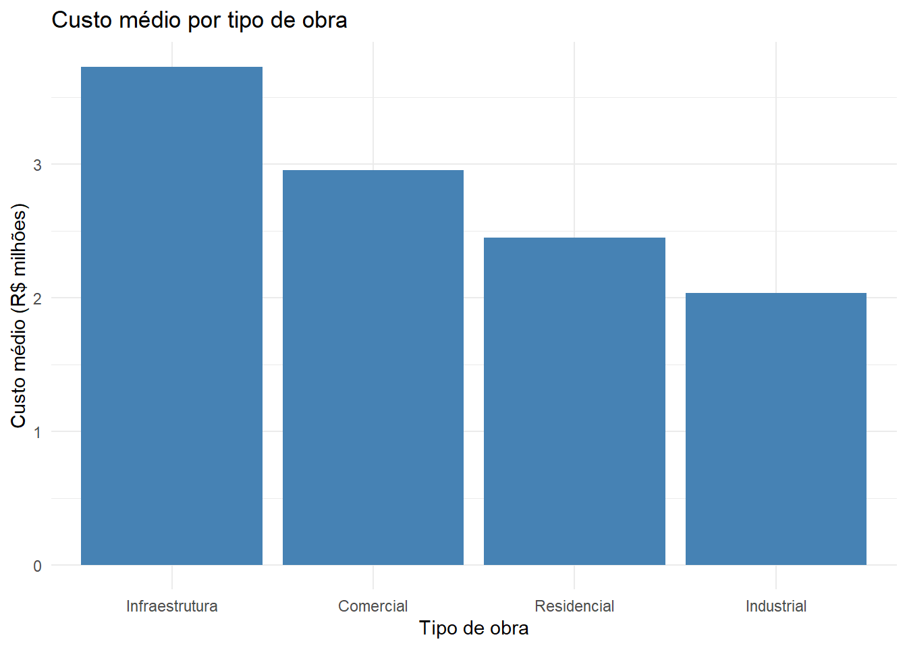
A partir dos resultados obtidos, foi possível verificar que as obras de infraestrutura apresentam o maior custo médio entre os tipos de obra analisados, com valor próximo de R$ 3,7 milhões. Em seguida aparecem as obras comerciais, residenciais e industriais, respectivamente.
Dessa forma, considerando a análise descritiva da base de dados, verifica-se que as obras de infraestrutura apresentam custo médio superior aos demais tipos analisados. Essa comparação considera apenas os dados analisados, sem a aplicação de testes estatísticos para verificar a significância das diferenças observadas.
Para investigar se as obras classificadas como sustentáveis apresentam custos sistematicamente diferentes das não sustentáveis, foram elaboradas duas representações gráficas. Inicialmente, foi utilizado um boxplot no Base R para comparar a distribuição do custo total entre os dois grupos. Em seguida, foi construído um gráfico de pontos com ggplot2, permitindo visualizar individualmente os valores de custo e a sobreposição existente entre as categorias.
Como os valores de custo_total são elevados, eles foram divididos por um milhão nos dois gráficos para facilitar a leitura do eixo vertical.
# Boxplot do custo total de acordo com a classificação de sustentabilidade
boxplot(
custo_total / 1000000 ~ sustentavel,
data = dados,
main = "Distribuição do custo total por sustentabilidade",
xlab = "Obra sustentável",
ylab = "Custo total (R$ milhões)",
col = c("lightblue", "lightgreen")
)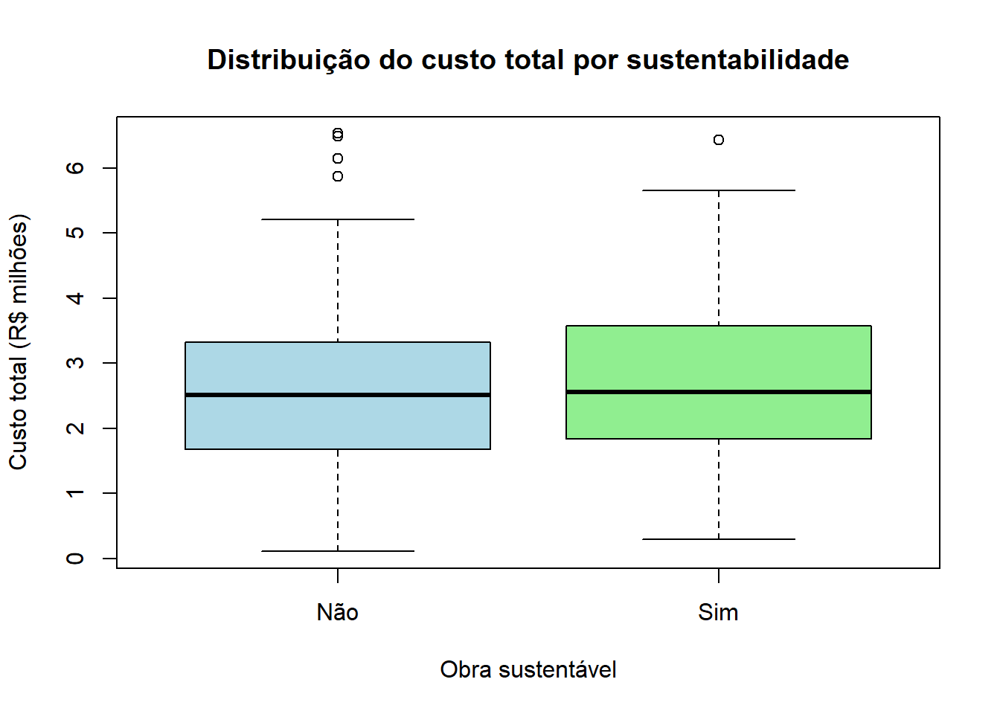
# Gráfico de pontos com ggplot2
dados |>
ggplot(
aes(
x = sustentavel,
y = custo_total / 1000000,
color = sustentavel
)
) +
geom_jitter(
width = 0.15,
alpha = 0.7,
size = 2
) +
labs(
title = "Distribuição do custo total por sustentabilidade",
subtitle = "Comparação entre obras sustentáveis e não sustentáveis",
x = "Obra sustentável",
y = "Custo total (R$ milhões)",
color = "Sustentável"
) +
theme_minimal()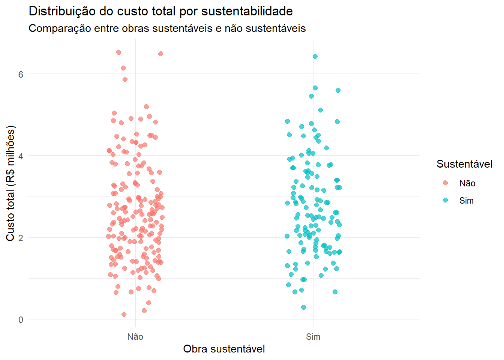
A partir dos dois gráficos, foi possível verificar que os custos das obras sustentáveis e não sustentáveis apresentam comportamento semelhante. No boxplot, as medianas dos dois grupos são próximas e há sobreposição entre os intervalos de maior concentração dos dados.
O gráfico de pontos reforça esse resultado, mostrando que as observações se distribuem por faixas de custo semelhantes nas duas categorias.
Para analisar a possível associação entre o índice de falhas e a satisfação, foi utilizado um gráfico de dispersão. Como o índice de falhas apresenta valores discretos, foi aplicado um pequeno deslocamento horizontal aos pontos por meio de `geom_jitter(), reduzindo a sobreposição das observações. Além disso, foi calculada a satisfação média para cada índice de falhas, representada por uma linha com pontos, facilitando a visualização do comportamento médio da variável.
# Relação entre índice de falhas e satisfação
# Cálculo da satisfação média por índice de falhas
satisfacao_media <- dados |>
group_by(indice_falhas) |>
summarise(
satisfacao_media = mean(satisfacao)
)
# Relação entre índice de falhas e satisfação
dados |>
ggplot(
aes(
x = indice_falhas,
y = satisfacao
)
) +
geom_jitter(
width = 0.12,
height = 0,
alpha = 0.25,
size = 1.5
) +
geom_line(
data = satisfacao_media,
aes(
x = indice_falhas,
y = satisfacao_media
),
linewidth = 1
) +
geom_point(
data = satisfacao_media,
aes(
x = indice_falhas,
y = satisfacao_media
),
size = 3
) +
labs(
title = "Relação entre índice de falhas e satisfação",
subtitle = "Satisfação média de acordo com o índice de falhas",
x = "Índice de falhas",
y = "Satisfação"
) +
theme_minimal()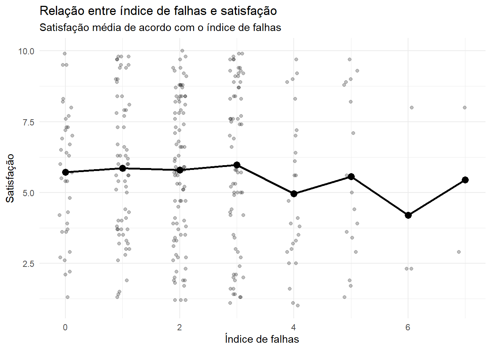
A partir do gráfico, não foi possível identificar uma associação visual forte entre o índice de falhas e a satisfação. Para os menores índices de falhas, que concentram a maior parte das observações, os valores médios de satisfação permanecem relativamente próximos. Nos índices mais elevados são observadas maiores oscilações, porém esses grupos apresentam menor quantidade de dados.
Foram utilizados pontos para representar as observações individuais e uma linha para conectar a satisfação média correspondente a cada índice de falhas. Essa combinação permitiu visualizar tanto a dispersão dos dados quanto o comportamento médio da satisfação, facilitando a comparação entre os diferentes níveis de falhas. Dessa forma, considerando apenas a análise gráfica, não há evidência visual de uma associação clara entre as duas variáveis.
Para sintetizar as principais características das obras analisadas, foram selecionados três gráficos com informações complementares. A organização foi definida de forma a apresentar inicialmente o perfil geral das obras, seguido pela distribuição das variáveis relacionadas ao custo e ao prazo e, por fim, pela relação entre duas variáveis técnicas do concreto.
No primeiro gráfico, o número de obras foi representado por tipo e região, permitindo visualizar simultaneamente a composição da base segundo essas duas variáveis. No segundo, foram utilizadas as informações de custo e prazo para avaliar sua distribuição conjunta. Por fim, foi representada a relação entre o consumo de cimento e a resistência à compressão, diferenciando os tipos de obra.
# Perfil das obras por tipo e região
grafico_perfil <- dados |>
ggplot(
aes(
x = tipo_obra,
fill = regiao
)
) +
geom_bar(
position = "dodge"
) +
labs(
title = "Perfil das obras por tipo e região",
x = "Tipo de obra",
y = "Número de obras",
fill = "Região"
) +
theme_minimal()
grafico_perfil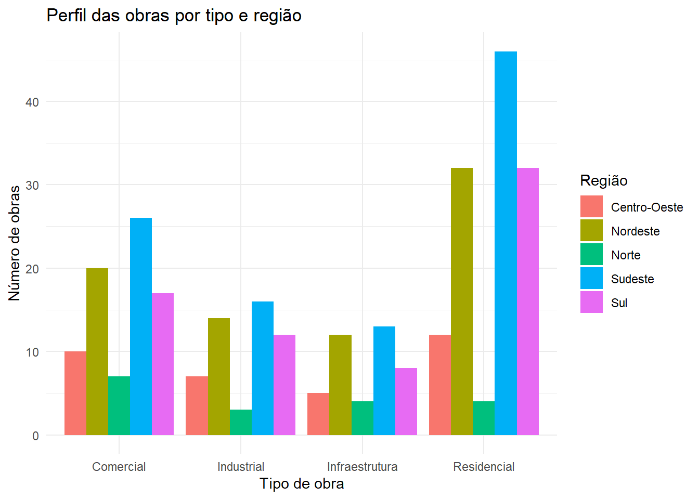
# Relação entre custo total e prazo das obras
grafico_custo_prazo <- dados |>
ggplot(
aes(
x = prazo_meses,
y = custo_total / 1000000
)
) +
geom_point(
alpha = 0.6,
size = 2
) +
geom_smooth(
method = "lm",
se = FALSE
) +
labs(
title = "Relação entre custo total e prazo das obras",
x = "Prazo (meses)",
y = "Custo total (R$ milhões)"
) +
theme_minimal()
grafico_custo_prazo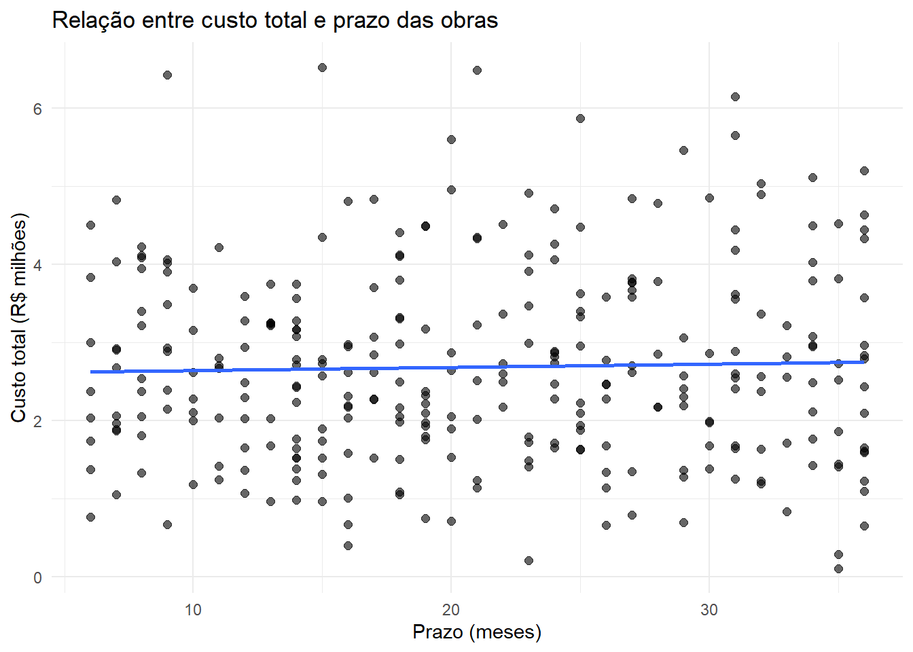
# Relação entre consumo de cimento e resistência à compressão
grafico_cimento <- dados |>
ggplot(
aes(
x = consumo_cimento,
y = resistencia_mpa
)
) +
geom_point(
aes(size = area_construida),
alpha = 0.5
) +
geom_smooth(
method = "lm",
se = FALSE,
color = "black"
) +
facet_wrap(~tipo_obra) +
scale_size(
range = c(1.5, 5)
) +
labs(
title = "Consumo de cimento e resistência à compressão",
subtitle = "Comparação entre os diferentes tipos de obra",
x = "Consumo de cimento (kg/m³)",
y = "Resistência à compressão (MPa)",
size = "Área construída (m²)"
) +
theme_minimal()
grafico_cimento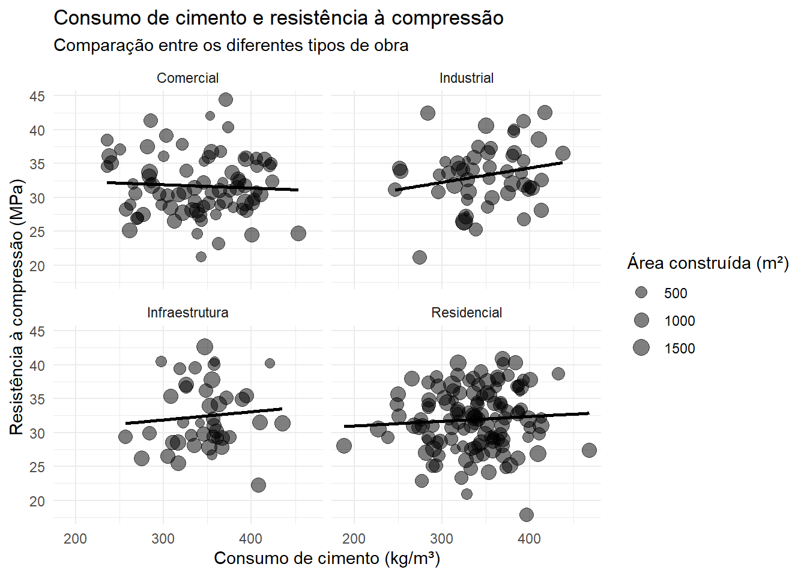
Os gráficos foram organizados de forma a partir de uma caracterização geral da base e avançar para informações relacionadas ao planejamento e aos aspectos técnicos das obras. Inicialmente, o gráfico de barras apresenta o perfil das obras por tipo e região, permitindo comparar simultaneamente a quantidade de registros entre essas categorias. Observa-se maior presença de obras residenciais e maior concentração de registros na região sudeste.
Na sequência, o gráfico de dispersão relaciona o prazo ao custo total das obras. Apesar da variação observada nas duas variáveis, a linha de tendência permanece praticamente horizontal, indicando que não há uma relação visual forte entre o aumento do prazo e o custo total na base analisada.
Por fim, a relação entre consumo de cimento e resistência à compressão foi apresentada separadamente por tipo de obra. As linhas de tendência apresentam comportamentos distintos entre as categorias, mas, de modo geral, as variações são pouco acentuadas. Dessa forma, não foi identificada uma relação forte e uniforme entre o aumento do consumo de cimento e a resistência à compressão.
A escolha das geometrias considerou o tipo de informação representada. O gráfico de barras foi utilizado para comparar as frequências das categorias, enquanto os gráficos de dispersão foram empregados para analisar relações entre variáveis numéricas. No último gráfico, o uso de facetas facilitou a comparação entre os tipos de obra sem concentrar todas as observações em um único painel.
Como síntese das análises desenvolvidas ao longo da atividade, os principais códigos utilizados foram reunidos em um único script, contemplando os diferentes sistemas gráficos trabalhados.
# DESAFIO FINAL - COMUNICAÇÃO VISUAL DOS DADOS
# Carregamento dos pacotes utilizados
library(dplyr)
library(ggplot2)
library(plotly)
library(highcharter)
library(leaflet)
# Importação da base de dados
dados <- read.csv(
"dados_engenharia_civil.csv",
stringsAsFactors = FALSE,
check.names = FALSE
)
# Inspeção inicial da base
# Verificação das dimensões, estrutura e principais características
# das variáveis antes da construção das representações gráficas.
dim(dados)
str(dados)
summary(dados)
# BASE R - Distribuição da resistência à compressão
# O objetivo é avaliar a distribuição dos valores de resistência à
# compressão. O histograma foi escolhido por permitir visualizar a
# frequência das observações ao longo dos diferentes intervalos.
# A média foi acrescentada como referência para auxiliar a leitura.
hist(
dados$resistencia_mpa,
breaks = 10,
main = "Distribuição da resistência à compressão",
xlab = "Resistência à compressão (MPa)",
ylab = "Frequência",
col = "steelblue",
border = "white"
)
media_resistencia <- mean(dados$resistencia_mpa)
abline(
v = media_resistencia,
col = "red",
lwd = 2,
lty = 2
)
legend(
"topright",
legend = "Média",
col = "red",
lty = 2,
lwd = 2,
bty = "n"
)
# GGPLOT2 - Perfil das obras por tipo e região
# O objetivo é caracterizar o perfil das obras considerando duas
# variáveis categóricas. As barras agrupadas foram escolhidas para
# permitir a comparação dos tipos de obra entre as diferentes regiões.
grafico_perfil <- dados |>
ggplot(
aes(
x = tipo_obra,
fill = regiao
)
) +
geom_bar(
position = "dodge"
) +
labs(
title = "Perfil das obras por tipo e região",
x = "Tipo de obra",
y = "Número de obras",
fill = "Região"
) +
theme_minimal()
grafico_perfil
# GRÁFICO AUTORAL - Consumo de cimento e resistência à compressão
# O objetivo é avaliar a relação entre duas variáveis técnicas do
# concreto e verificar seu comportamento entre os tipos de obra.
# O gráfico de dispersão foi utilizado por envolver duas variáveis
# numéricas, enquanto a linha de tendência auxilia na visualização
# do comportamento da relação entre elas.
# As facetas permitem comparar os tipos de obra separadamente e o
# tamanho dos pontos acrescenta a informação da área construída.
grafico_cimento <- dados |>
ggplot(
aes(
x = consumo_cimento,
y = resistencia_mpa
)
) +
geom_point(
aes(size = area_construida),
alpha = 0.5
) +
geom_smooth(
method = "lm",
se = FALSE,
color = "black"
) +
facet_wrap(~tipo_obra) +
scale_size(
range = c(1.5, 5)
) +
labs(
title = "Consumo de cimento e resistência à compressão",
subtitle = "Comparação entre os diferentes tipos de obra",
x = "Consumo de cimento (kg/m³)",
y = "Resistência à compressão (MPa)",
size = "Área construída (m²)"
) +
theme_minimal()
grafico_cimento
# PLOTLY - Relação entre área construída e custo total
# O objetivo é analisar a relação entre área construída e custo total
# e permitir a consulta individual das características de cada obra.
# O gráfico de dispersão foi escolhido por representar duas variáveis
# numéricas, enquanto as cores diferenciam os tipos de obra.
# A interatividade permite acessar informações adicionais pelo tooltip
# sem acrescentar excesso de informações diretamente ao gráfico.
grafico_custo <- dados |>
ggplot(
aes(
x = area_construida,
y = custo_total / 1000000,
color = tipo_obra,
text = paste(
"Obra:", id_obra,
"<br>Tipo:", tipo_obra,
"<br>Região:", regiao,
"<br>Área:", area_construida, "m²",
"<br>Custo: R$",
round(custo_total / 1000000, 2),
"milhões"
)
)
) +
geom_point(
size = 2,
alpha = 0.8
) +
labs(
title = "Relação entre área construída e custo total",
x = "Área construída (m²)",
y = "Custo total (R$ milhões)",
color = "Tipo de obra"
) +
theme_minimal()
ggplotly(
grafico_custo,
tooltip = "text"
)
# HIGHCHARTER - Custo médio por tipo de obra
# O objetivo é comparar o custo médio entre os diferentes tipos de obra.
# O gráfico de colunas foi escolhido por facilitar a comparação direta
# de uma medida numérica entre categorias.
# O tooltip disponibiliza os valores exatos sem a necessidade de
# inserir rótulos adicionais diretamente nas colunas.
custo_medio_tipo <- dados |>
group_by(tipo_obra) |>
summarise(
custo_medio = mean(custo_total)
) |>
arrange(desc(custo_medio))
hchart(
custo_medio_tipo,
"column",
hcaes(
x = tipo_obra,
y = custo_medio / 1000000
)
) |>
hc_title(
text = "Custo médio por tipo de obra"
) |>
hc_xAxis(
title = list(text = "Tipo de obra")
) |>
hc_yAxis(
title = list(text = "Custo médio (R$ milhões)")
) |>
hc_tooltip(
pointFormat = "<b>R$ {point.y:.2f} milhões</b>"
) |>
hc_add_theme(
hc_theme_darkunica()
)
# LEAFLET - Distribuição das obras por região
# O objetivo é representar espacialmente a distribuição dos registros
# entre as regiões brasileiras utilizando um mapa interativo.
# Como a base não possui as coordenadas individuais das obras, foram
# utilizadas capitais como pontos de referência para cada região.
# Os marcadores permitem representar esses pontos sem sugerir que toda
# a área da região corresponde à localização das obras, enquanto os
# popups disponibilizam as informações associadas a cada marcador.
obras_regiao <- dados |>
count(regiao)
coordenadas <- data.frame(
regiao = c(
"Centro-Oeste",
"Nordeste",
"Norte",
"Sudeste",
"Sul"
),
capital = c(
"Cuiabá",
"Teresina",
"Manaus",
"Belo Horizonte",
"Curitiba"
),
lat = c(
-15.60,
-5.09,
-3.12,
-19.92,
-25.43
),
lng = c(
-56.10,
-42.80,
-60.02,
-43.94,
-49.27
)
)
mapa_regioes <- coordenadas |>
left_join(
obras_regiao,
by = "regiao"
)
leaflet(mapa_regioes) |>
addTiles() |>
addMarkers(
lng = ~lng,
lat = ~lat,
popup = ~paste0(
"<b>Região: </b>", regiao,
"<br><b>Número de obras: </b>", n,
"<br><b>Capital de referência: </b>", capital
)
) |>
setView(
lng = -52,
lat = -15,
zoom = 4
)A principal diferença observada entre o Base R e o ggplot2 está na forma de construção dos gráficos. No Base R, os elementos são inseridos de maneira mais direta, sendo possível construir e complementar uma representação por meio de diferentes funções. Já no ggplot2, o gráfico é estruturado a partir da combinação de camadas e do mapeamento das variáveis aos diferentes elementos visuais. Essa organização facilitou principalmente a construção de gráficos com maior quantidade de informações, como aqueles que utilizaram cores, linhas de tendência e facetas.
O desenvolvimento do relatório também mostrou que a escolha do sistema gráfico e da geometria deve estar relacionada ao tipo de informação que se pretende analisar. Variáveis categóricas foram representadas de forma mais clara por gráficos de barras ou colunas, enquanto os gráficos de dispersão se mostraram mais adequados para avaliar relações entre variáveis numéricas. Da mesma forma, histogramas e boxplots permitiram analisar diferentes características das distribuições. Na Engenharia Civil, essa escolha é importante porque uma mesma base pode reunir informações de custos, prazos, características técnicas e localização, que não necessariamente devem ser representadas da mesma maneira.
Entre as representações desenvolvidas, o gráfico interativo da relação entre área construída e custo total foi um dos mais informativos. O gráfico de dispersão permitiu visualizar o comportamento geral entre essas duas variáveis, enquanto a diferenciação por tipo de obra acrescentou uma nova informação à análise. Além disso, a utilização do plotly possibilitou consultar individualmente cada observação por meio do tooltip, permitindo identificar obras que apresentavam comportamentos diferentes do padrão predominante sem sobrecarregar visualmente o gráfico.
A realização da atividade permitiu aplicar diferentes recursos de visualização de dados da linguagem R a informações relacionadas à Engenharia Civil. A partir das ferramentas utilizadas, foi possível representar distribuições, comparar categorias, analisar relações entre variáveis e explorar formas interativas e espaciais de apresentação dos dados.
Ao longo do trabalho, também foi possível verificar que a construção de um gráfico não depende apenas da escolha das variáveis, mas também da definição da geometria, das escalas e dos elementos visuais mais adequados ao objetivo da análise. Recursos como cores, facetas, linhas de tendência, tooltips e popups acrescentaram diferentes possibilidades de interpretação, desde que utilizados de forma compatível com as informações disponíveis.
Dessa forma, a atividade permitiu compreender melhor as diferenças entre os sistemas gráficos trabalhados e a importância de selecionar uma representação de acordo com o tipo de dado e com a informação que se pretende comunicar.